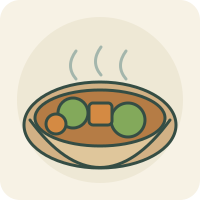

पुस्तक 02 / भाग 03
जीवन की हिंदी
Everyday Hindi
भाग 03 · PHASE 3
जीवन की हिंदी
परिचय, विद्यालय, बाज़ार, यात्रा और बातचीत।
Everyday Hindi
 21
21मेरा परिचय
Introductions2 पाठ · 1 कार्यपत्रक
पढ़ें →22परिवार और संबंध
Family and relationships2 पाठ · 1 कार्यपत्रक
पढ़ें → 23
23विद्यालय और पढ़ाई
School and study2 पाठ · 1 कार्यपत्रक
पढ़ें → 24
24संख्या, समय और दिन
Numbers and time2 पाठ · 1 कार्यपत्रक
पढ़ें → 25
25भोजन और रसोई
Food and kitchen2 पाठ · 1 कार्यपत्रक
पढ़ें →
26बाज़ार और खरीदारी
Shopping2 पाठ · 1 कार्यपत्रक
पढ़ें →27रास्ता और यात्रा
Directions and travel2 पाठ · 1 कार्यपत्रक
पढ़ें → 28
28स्वास्थ्य और शरीर
Health and body2 पाठ · 1 कार्यपत्रक
पढ़ें → 29
29ऋतु और प्रकृति
Weather and nature2 पाठ · 1 कार्यपत्रक
पढ़ें → 30
30दैनिक संवाद और पुनरावृत्ति
Daily communication review2 पाठ · 1 कार्यपत्रक
पढ़ें →